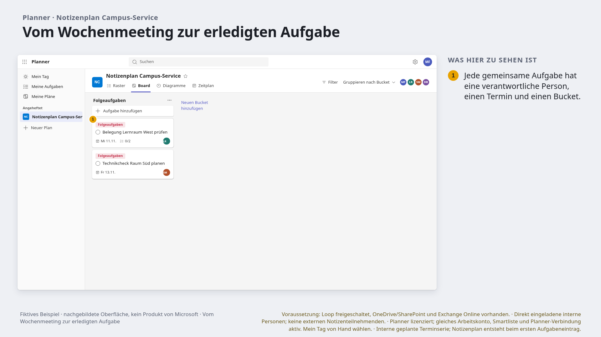
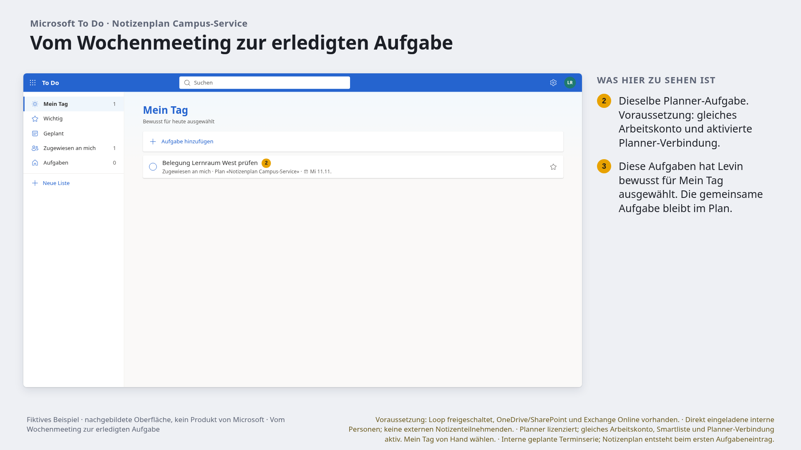
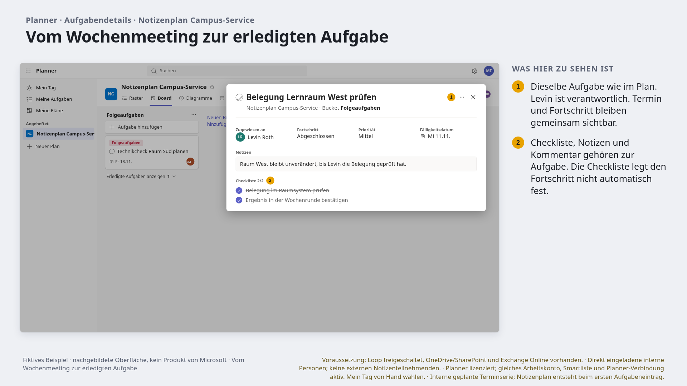
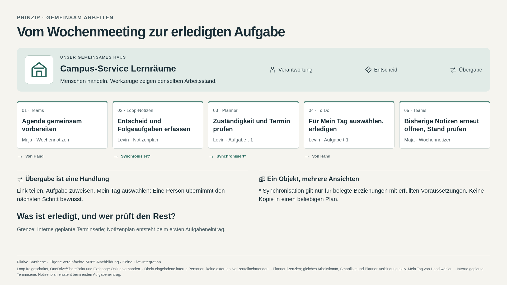

MORGENREVIEW · 9. NOVEMBER 2026
Gemeinsam arbeiten.
Verantwortung sichtbar machen.
Vier zusätzliche Hochschulgruppen, zwölf recherchierte Situationen und sechs vollständige Abfolgen. Beginne mit dem Wochenmeeting und der gemeinsam bearbeiteten Loop-Komponente.
Interaktive Bibliothek · Handoff und Testresultate · Quellen und Auswahl · Bildsprache
Quellenzugriff: 2026-11-09. Alle Geschichten sind fiktive Synthese. Keine Tenant- oder Berechtigungsprüfung. Projektformat 1 · Fähigkeiten 6 · Renderbasis 09ee3e207b31.
- ⌂Dauerhafter Servicebetrieb
Campus-Service Lernräume
Im Protokoll beschlossen. Bis nächste Woche vergessen.
- Menschen / Dauer
- 6–10 Personen · dauerhaft
- Rhythmus
- wöchentlich, 25 Minuten
- Lehrfrage
- Wer prüft nächste Woche, ob der Beschluss umgesetzt ist?
Gruppe erkunden → - ⌂Befristete Forschungsförderung
Antragsteam Brückenforschung
Eine Frist, viele Beiträge und niemand sieht die letzte Lücke.
- Menschen / Dauer
- 5–8 Personen · 8 Wochen bis Einreichung
- Rhythmus
- Beiträge asynchron, Review zweimal pro Woche
- Lehrfrage
- Welcher Beitrag blockiert die Einreichung?
Gruppe erkunden → - ⌂Temporäre Veranstaltungsorganisation
Campus-Konferenz Perspektiven
Der Ablauf ist aktuell, die Zuständigkeit noch von letzter Woche.
- Menschen / Dauer
- 8–12 Personen, Kerngruppe 4 · 4 Monate plus Abschluss
- Rhythmus
- wöchentlich, täglich in der Schlusswoche
- Lehrfrage
- Wer übernimmt den offenen Technikcheck am Veranstaltungstag?
Gruppe erkunden → - ⌂Freiwillige Community of Practice
Netzwerk Lehrpraxis
Die gute Idee bleibt in einem Chat, der Rest liest eine alte Mail.
- Menschen / Dauer
- 12–25 Personen, Redaktion 4 · semesterübergreifend
- Rhythmus
- monatlicher Austausch, offene Beiträge
- Lehrfrage
- Wie wird aus einem Beitrag eine verlässliche Ressource?
Gruppe erkunden →
Zwei Beziehungen zuerst prüfen
Campus-Service Lernräume · 6 FOLIEN
Vom Wochenmeeting zur erledigten Aufgabe
Agenda, Entscheid und persönliche Umsetzung verbinden.
Abfolge erkunden und als PNG exportieren · Portables Projekt-JSON
 1. meeting-notes · Agenda vorab gemeinsam ergänzen. Maja hält den Entscheid als Notiz fest. Levin und Sofia erhalten Aufgaben. Beim ersten Aufgabeneintrag entsteht der Notizenplan; «In Planner öffnen» ist eine manuelle Navigation. · PNG in Originalgrösse
1. meeting-notes · Agenda vorab gemeinsam ergänzen. Maja hält den Entscheid als Notiz fest. Levin und Sofia erhalten Aufgaben. Beim ersten Aufgabeneintrag entsteht der Notizenplan; «In Planner öffnen» ist eine manuelle Navigation. · PNG in Originalgrösse
2. planner · Aufgaben bewusst im Plan anlegen. Person, Termin und offene Beiträge gemeinsam prüfen. · PNG in Originalgrösse
3. todo · Nur die gewählte Person sieht hier ihre zugewiesenen und gegebenenfalls persönlichen Aufgaben. Mein Tag wird bewusst gewählt. · PNG in Originalgrösse 4. meeting-notes · Levin hat t-1 erledigt; dieselbe Aufgabe ist hier abgehakt. Maja öffnet die bisherigen Notizen bewusst erneut. Keine automatische Übertragung in eine neue Terminnotiz behaupten. · PNG in Originalgrösse
4. meeting-notes · Levin hat t-1 erledigt; dieselbe Aufgabe ist hier abgehakt. Maja öffnet die bisherigen Notizen bewusst erneut. Keine automatische Übertragung in eine neue Terminnotiz behaupten. · PNG in Originalgrösse
5. planner-task · Dieselbe Aufgabe öffnen: Kontext, Checkliste und Zuständigkeit prüfen. · PNG in Originalgrösse
6. workflow · Was ist erledigt, und wer prüft den Rest? · PNG in OriginalgrösseLehrfrage: Was ist erledigt, und wer prüft den Rest?
Grenze: Interne geplante Terminserie; Notizenplan entsteht beim ersten Aufgabeneintrag.
Antragsteam Brückenforschung · 5 FOLIEN
Noch sieben Tage bis zur Einreichung
Dokumentbeitrag und Aufgabe mit klarer Zuständigkeit verbinden.
Abfolge erkunden und als PNG exportieren · Portables Projekt-JSON
Lehrfrage: Ist ein Kanalbeitrag schon eine erledigte Aufgabe?
Grenze: Aufgaben werden von Hand angelegt; Einreichung im Förderportal bleibt manuell.
Campus-Konferenz Perspektiven · 5 FOLIEN
Konferenztag: Wer übernimmt die Technik?
Übergabe mit Kontext und bestätigter Übernahme sichtbar machen.
Abfolge erkunden und als PNG exportieren · Portables Projekt-JSON
Lehrfrage: Welche Information braucht Luca für die Übernahme?
Grenze: Zuständigkeit wird bewusst geändert; kein Automatismus aus Chatnachrichten.
Campus-Service Lernräume · 5 FOLIEN
Die erste Woche im Campus-Service
Gemeinsame Einarbeitung von persönlicher Erinnerung trennen.
Abfolge erkunden und als PNG exportieren · Portables Projekt-JSON
Lehrfrage: Was muss das Team sehen, was bleibt persönlich?
Grenze: Keine Fall- oder Studierendendaten; formale Berechtigungen ausserhalb des Beispiels.
Netzwerk Lehrpraxis · 6 FOLIEN
Vom Austausch zum Methodenblatt
Eine Ressource bewusst publizieren und redaktionell verantworten.
Abfolge erkunden und als PNG exportieren · Portables Projekt-JSON
Lehrfrage: Wer prüft die Ressource vor der Freigabe?
Grenze: Publikation und Aufgabenanlage sind manuell; keine automatische Loop-Veröffentlichung.
Drei visuelle Entscheidungen für Achim
- Gruppe als Haus, geteiltes Objekt als eigener Rahmen: Ist die Trennung sofort verständlich?
- Synchronisation nur mit beschrifteten Pfeilen: Reichen diese Erklärungen für eine Schulungsfolie?
- Loop-Karte gross und fokussiert: Ist die vereinfachte Oberfläche als Lehrbild brauchbar, oder braucht es zusätzlich einen Tenant-Abgleich?
Zusätzliche Rechercheeinträge: Semesterplan und Lehrteam · Gremienunterlagen vor der Sitzung · Feldwoche vorbereiten · Vom eigenen Entwurf zur gemeinsamen Datei · Anfragen strukturiert entgegennehmen · Aufgabe oder Betriebsregister?.